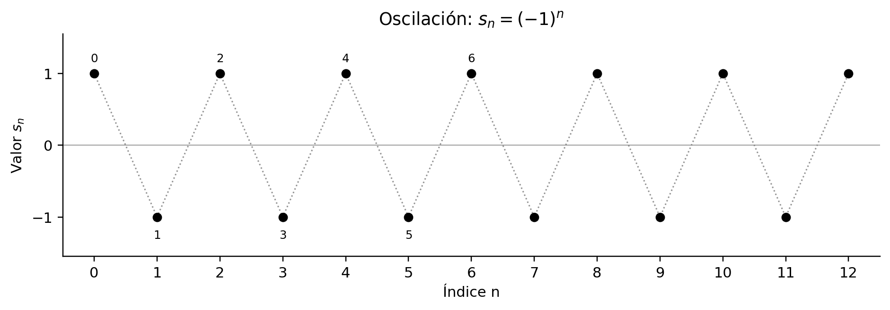
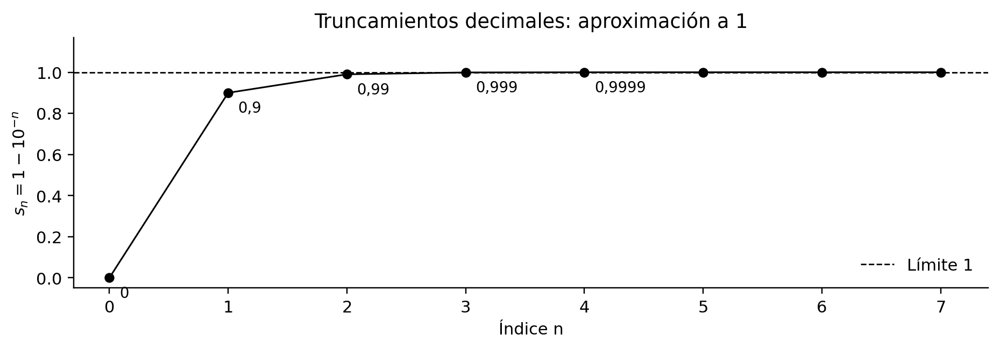
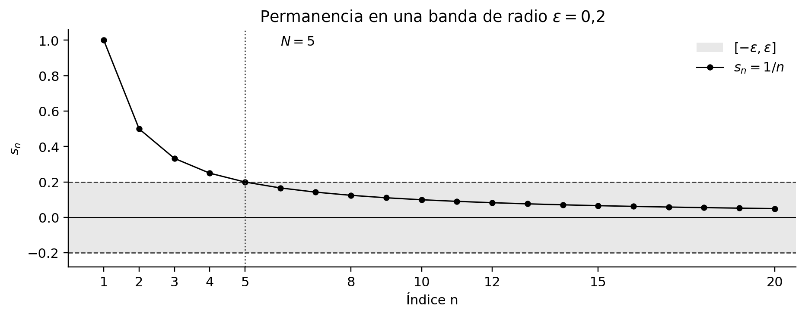
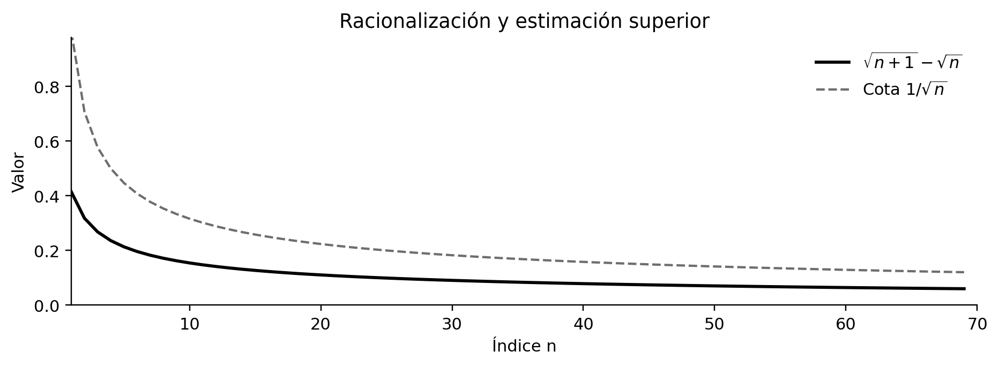
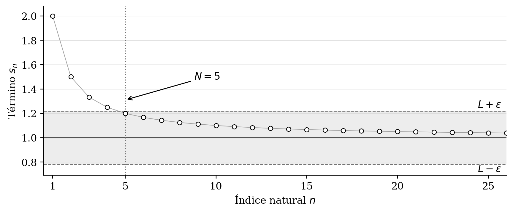
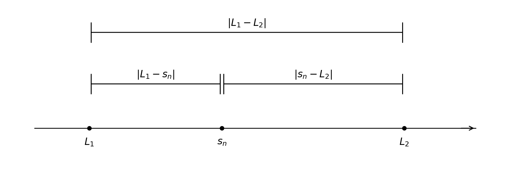
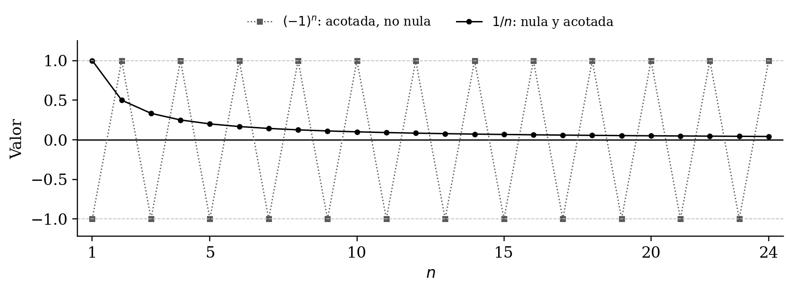
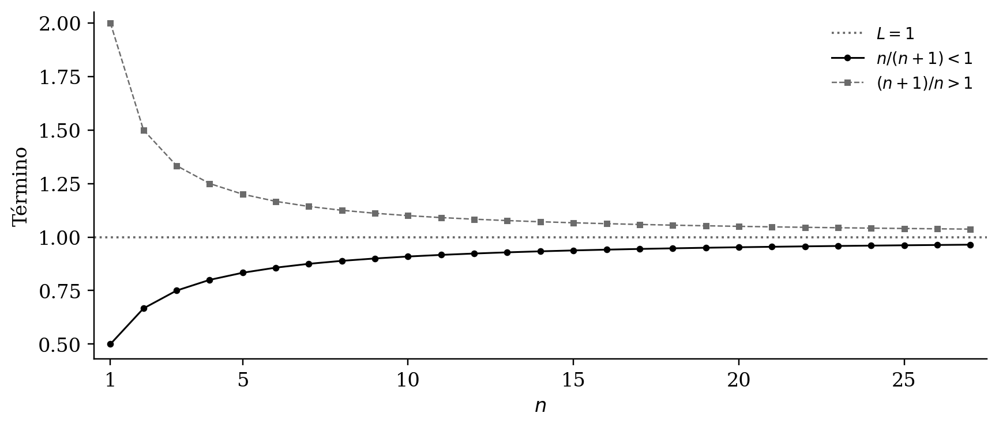
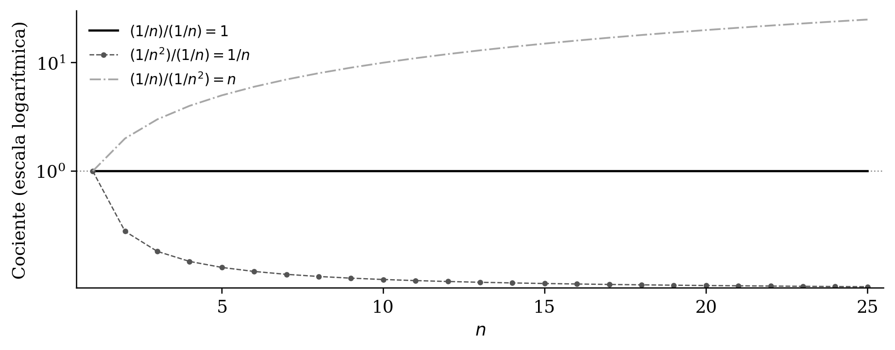

Sucesiones y convergencia
Capítulo 10 · Parte III. La completitud de los reales y las sucesiones
Una sucesión es una función con dominio discreto, pero su convergencia se mide mediante cuantificadores que expresan aproximación arbitraria. Unicidad, acotación y álgebra de límites constituyen su primera teoría.
Grabaciones de referencia: grabación de la cátedra 9.1, grabación de la cátedra 9.2.
Procedencia de este tramo: cátedra 9.1.
De los números reales a las sucesiones
En la cátedra (08:47–11:07). La semana precedente se estudió el axioma del supremo, del que se dedujo la propiedad arquimediana de los reales. San Martín presenta ahora las sucesiones como una herramienta para expresar propiedades de aproximación y abordar problemas que, formulados directamente mediante la propiedad del supremo, resultarían más difíciles. Las semanas 9 y 10 comprenderán cuatro sesiones sobre sucesiones; esta primera se concentra en dos conceptos: qué es una sucesión y qué significa que converja.
Conviene distinguir dos planos. El plano algebraico permite calcular con los términos de una sucesión. El plano analítico permite preguntar por su comportamiento cuando el índice natural crece sin cota superior. La convergencia articula ambos planos mediante una condición cuantificada de aproximación.
Definición y naturaleza funcional de una sucesión
Definición principal
En la cátedra (11:07–14:11). Una sucesión real es una función
\[ \boxed{s:\mathbb N\longrightarrow\mathbb R, \qquad n\longmapsto s(n)=s_n.} \]
La variable independiente es un índice natural. En este curso se mantiene la convención \(\mathbb N=\{0,1,2,\ldots\}\). Para cada \(n\in\mathbb N\), el real \(s_n\) es el término de índice \(n\). La sucesión es la función completa, cuyo comportamiento queda determinado por sus valores en todos los índices.
La idea se extiende a cualquier conjunto de llegada \(X\) mediante una aplicación \(s:\mathbb N\to X\). El curso trabaja con \(X=\mathbb R\), mientras que en cursos posteriores podrán estudiarse sucesiones de puntos del plano, del espacio o de espacios más generales.
Salvedad acerca del dominio: términos iniciales omitidos
En la cátedra (23:51–30:44). San Martín adopta una convención práctica habitual en análisis: también estudia como sucesión una regla que posee valores para todos los naturales salvo una cantidad finita de ellos. Equivalentemente, existe \(n_\ast\in\mathbb N\) a partir del cual todos los términos están definidos. Se habla entonces de una sucesión definida eventualmente o en una cola de los naturales.
Para precisar esta convención, puede escribirse
\[ s:\{n\in\mathbb N:n\ge n_\ast\}\longrightarrow\mathbb R. \]
Cuando la regla solo presenta excepciones finitas, los términos restantes se pueden estudiar de manera coherente desde un índice suficientemente grande. El ejemplo clásico es
\[s_n=\frac1n,\qquad n\ge1,\]
cuyo primer término es \(s_1=1\); después aparecen \(s_2=1/2\), \(s_3=1/3\), etcétera. La expresión también puede completarse como una función sobre toda \(\mathbb N\) eligiendo arbitrariamente un valor real para \(s_0\), pero el tratamiento de la clase conserva la forma \(n\ge1\).
Ejemplos contrastados en la cátedra:
- \(s_n=\sqrt{n-10}\) posee valores reales para todos los naturales \(n\ge10\). Es una sucesión a partir del índice \(10\).
- La fórmula \(\sqrt{10-n}\) posee valores reales para \(0\le n\le10\) y un conjunto finito de índices admisibles; por ello no proporciona una sucesión real infinita en la convención empleada.
- \(s_n=(-1)^n\) está definida en todos los naturales. Sus valores alternan \(1,-1,1,-1,\ldots\).
- La regla \(\sqrt{(-1)^n}\) admite valores reales exactamente para los índices pares. La ausencia de términos en todos los índices impares impide considerarla una sucesión real eventualmente definida.
Ampliación editorial: distinción de dominios. Una función cuyo dominio es el conjunto de naturales pares sigue siendo, naturalmente, una función matemática; para estudiar una sucesión indexada por todos los naturales se puede volver a indexarla: \(t_k=\sqrt{(-1)^{2k}}=1\). Esta reindexación produce una nueva sucesión y debe declararse expresamente. Así se preserva la diferencia entre la regla original y la nueva función.
Notación y estructura ordenada
En la cátedra (14:11–23:24). La notación característica es
\[ \boxed{(s_n)_{n\in\mathbb N}\quad\text{o, abreviadamente,}\quad(s_n).} \]
El profesor prefiere \(s,u,v,w\) para sucesiones y \(n,m,k\) para índices, con subíndices en lugar de escribir \(s(n)\). La exposición puede desplegar la sucesión como \((s_0,s_1,s_2,\ldots)\), que registra los valores en su orden de aparición.
Una sucesión y el conjunto de sus valores cumplen funciones diferentes. El conjunto imagen \(\{s_n:n\in\mathbb N\}\) conserva qué valores aparecen, mientras que la función \(n\mapsto s_n\) registra cuáles aparecen en cada índice y cuántas veces reaparecen. Por ejemplo,
\[ (1,2,1,2,\ldots),\qquad(2,1,2,1,\ldots) \]
son sucesiones distintas; ambas tienen como imagen el conjunto \(\{1,2\}\). Del mismo modo, \((1,1,1,\ldots)\) es una sucesión constante y su imagen es el conjunto unitario \(\{1\}\). Por eso se reserva la llave para los conjuntos y se prefieren paréntesis para las sucesiones.
Ejemplos que anticipan la convergencia
La sucesión alternante
En la cátedra (28:42–30:01; 39:36–40:31). La regla
\[s_n=(-1)^n\]
proporciona \(s_{2k}=1\) y \(s_{2k+1}=-1\) para todos los \(k\in\mathbb N\). La gráfica muestra el movimiento alterno entre dos valores.

Más adelante esta sucesión será un ejemplo elemental de comportamiento oscilatorio que impide la convergencia a un único número real.
Truncamientos de decimales: \(0,9\), \(0,99\), \(0,999\), …
En la cátedra (31:06–33:28). El profesor escribe primero los términos
\[ s_0=0,\quad s_1=0{,}9,\quad s_2=0{,}99,\quad s_3=0{,}999,\quad\ldots \]
Una fórmula que recoge exactamente este patrón es
\[ \boxed{s_n=\sum_{k=1}^{n}\frac9{10^k}=1-10^{-n},\qquad n\ge0,} \]
interpretando la suma vacía para \(n=0\) como \(0\). El profesor muestra que se puede concebir \(0,999\ldots\) como el número asociado al proceso de aproximación por una sucesión de decimales finitos.

Ampliación editorial. La fórmula hace posible verificar de inmediato que \(s_n\to1\), pues la distancia es \(|s_n-1|=10^{-n}\). La igualdad \(0{,}999\ldots=1\) adquiere así una interpretación precisa cuando la escritura decimal infinita se define como el límite de sus truncamientos. La demostración formal puede obtenerse con la definición de convergencia que se estudiará en la sección 6.
Aproximar \(\sqrt2\) y \(\pi\)
En la cátedra (33:28–36:57). Aparece una familia de aproximaciones decimales de \(\sqrt2\), comenzando por \(1\), \(1,4\), \(1,41\), \(1,414\), y otra construida a partir de los decimales de \(\pi\): \(3\), \(3,1\), \(3,14\), \(3,141\), … El profesor utiliza estos ejemplos para hacer visible un número real al que se aproximan términos racionales.
Ampliación editorial: formulación exacta. Sea \(x\ge0\) un real fijo. Definamos
\[ t_n(x)=\frac{\lfloor10^n x\rfloor}{10^n},\qquad n\in\mathbb N. \]
Por la propiedad definitoria de la parte entera,
\[ 0\le x-t_n(x)<10^{-n}. \]
Esta desigualdad explica por qué los truncamientos racionales aproximan \(x\). Para \(x=\sqrt2\) se obtiene la primera familia descrita, y para \(x=\pi\), la segunda. El empleo de la parte entera para expresar la regla es un desarrollo editorial de la idea mostrada en la clase.
Representación geométrica
En la cátedra (37:22–41:31). Puesto que el índice siempre recorre los naturales, San Martín propone mirar directamente la recta de los valores reales e indicar el movimiento desde \(s_0\) a \(s_1\), desde \(s_1\) a \(s_2\), y así sucesivamente. La representación ordinaria en un plano cartesiano, con puntos \((n,s_n)\), sigue siendo correcta; el dibujo sobre la recta real enfatiza el acercamiento, la oscilación o el alejamiento de los valores.
Para la sucesión alternante el movimiento oscila de \(1\) a \(-1\). Para los truncamientos \(1-10^{-n}\) cada nuevo término se coloca más cerca de \(1\), mientras que la magnitud del salto decrece. El dibujo sugiere que existe un número real distinguido que organiza el comportamiento de los términos. La definición de convergencia permite caracterizar exactamente esa aproximación.
La definición de convergencia
Enunciado con tres cuantificadores
En la cátedra (41:45–49:58). Sea \((s_n)\) una sucesión real eventualmente definida y sea \(L\in\mathbb R\). Diremos que la sucesión converge a \(L\) cuando se cumple
\[ \boxed{\forall\varepsilon>0\;\exists N\in\mathbb N\;\forall n\ge N: \quad |s_n-L|\le\varepsilon.} \tag{C} \]
Se escribe indistintamente
\[ (s_n)\longrightarrow L,\qquad s_n\longrightarrow L, \qquad\lim_{n\to\infty}s_n=L. \]
El índice \(N\) se elige, cuando corresponde, suficientemente grande para que \(s_n\) esté definido para cada \(n\ge N\). Esta salvedad importa en el ejemplo \(1/n\).
Lectura lógica. Para cada precisión positiva \(\varepsilon\) existe un índice \(N\) de manera que todos los términos con índice \(n\ge N\) están a una distancia de \(L\) menor o igual que esa precisión. En particular, los términos de una cola completa de la sucesión cumplen simultáneamente la misma desigualdad.
San Martín contrapone esta formulación con la condición de cota superior y la propiedad arquimediana, estudiadas previamente:
\[ \begin{aligned} b\text{ es cota superior de }A &\iff (\forall a\in A)\;a\le b,\\[3pt] \text{Propiedad arquimediana} &:\quad (\forall\varepsilon>0)(\exists N\in\mathbb N)\;\varepsilon N>1,\\[3pt] \text{Convergencia a }L &:\quad(\forall\varepsilon>0)(\exists N\in\mathbb N) (\forall n\ge N)\;|s_n-L|\le\varepsilon. \end{aligned} \]
La última condición incorpora el tercer cuantificador, encargado de que la proximidad al límite persista para todos los índices posteriores.
Convención \(\le\varepsilon\) y formulación estricta
En la cátedra. La versión escrita por San Martín utiliza \(|s_n-L|\le\varepsilon\). En otros manuales es corriente la forma \(|s_n-L|<\varepsilon\). Ambas expresan la misma convergencia porque \(\varepsilon\) recorre todos los reales positivos.
Ampliación editorial: prueba de equivalencia. Si se cumple la versión estricta, se cumple también la versión amplia para el mismo \(\varepsilon\). A la inversa, dada una precisión \(\varepsilon>0\), se aplica la versión amplia a la precisión positiva \(\varepsilon/2\). Existe entonces \(N\) para el que
\[|s_n-L|\le\frac\varepsilon2<\varepsilon\qquad(n\ge N).\]
Por tanto, las dos convenciones son lógicamente equivalentes. Mantendremos \(\le\) en las demostraciones para reproducir la formulación de esta cátedra.
El significado geométrico del límite
Distancia e intervalo de proximidad
En la cátedra (50:33–57:32). La desigualdad que aparece al final de (C) puede transformarse mediante las propiedades del valor absoluto:
\[ \begin{aligned} |s_n-L|\le\varepsilon &\iff -\varepsilon\le s_n-L\le\varepsilon\\ &\iff L-\varepsilon\le s_n\le L+\varepsilon\\ &\iff s_n\in[L-\varepsilon,L+\varepsilon]. \end{aligned} \]
Así, la proximidad se expresa geométricamente mediante un intervalo centrado en \(L\) y de radio \(\varepsilon\). El profesor lo llama vecindad de \(L\). El intervalo cerrado tiene longitud \(2\varepsilon\) y representa todos los valores que satisfacen la desigualdad de la cátedra.
La definición completa afirma que, para cualquier tamaño positivo de ese intervalo, existe un lugar de la sucesión desde el cual sus términos permanecen dentro de él.
El umbral \(N\) y su dependencia de \(\varepsilon\)
En la cátedra (58:37–1:05:33; 1:11:13–1:15:56). Los términos iniciales pueden encontrarse fuera del intervalo, ingresar, salir de nuevo e ingresar otra vez. Lo exigido es la existencia de un umbral \(N\) a partir del cual todos permanecen dentro. El orden lógico es esencial:
\[ \underset{\text{precisión elegida}}{\forall\varepsilon>0} \quad\underset{\text{umbral que podemos elegir}}{\exists N} \quad\underset{\text{todos los índices posteriores}}{\forall n\ge N}. \]
Si se reduce \(\varepsilon\), el intervalo se estrecha y puede resultar necesario elegir un índice umbral mayor. En una sucesión constante igual a \(L\) cualquier índice sirve para toda precisión, porque \(|L-L|=0\).
Precisiones editoriales:
- El índice umbral puede depender de la precisión: es frecuente escribir \(N=N(\varepsilon)\). La definición exige encontrar alguno; no requiere hallar el menor.
- Si un umbral \(N\) funciona para cierta precisión, cualquier \(N'\ge N\) también funciona para esa misma precisión.
- Con la misma sucesión, un umbral que sirve para \(\varepsilon_1\) también sirve para cualquier \(\varepsilon_2\ge\varepsilon_1\).
- La sucesión puede alcanzar el límite en uno, varios o todos sus términos. La convergencia describe distancias y permanencia, y admite la igualdad \(s_n=L\).
- El valor \(\varepsilon=0\) queda fuera de (C): imponerlo pediría que todos los términos de una cola fueran exactamente \(L\), propiedad más fuerte que la convergencia ordinaria.
Por qué se necesita el cuantificador final
Ampliación editorial. Consideremos \(s_n=(-1)^n\). Para la precisión \(\varepsilon=1/2\), las distancias a cualquier candidato \(L\) no pueden ser pequeñas simultáneamente en todos los índices pares e impares suficientemente grandes. En efecto, si ambas distancias fueran \(\le1/2\), tendríamos
\[ 2=|1-(-1)|\le|1-L|+|L+1|\le1, \]
una imposibilidad. La sucesión alternante, por tanto, no converge a ningún real.
La exigencia «hay términos arbitrariamente avanzados próximos a \(L\)» es distinta de la convergencia: podrían existir también términos arbitrariamente avanzados lejos de él. El último cuantificador asegura la estabilidad de toda la cola.
Un procedimiento para demostrar convergencia
En la cátedra (1:18:11–1:25:21). San Martín comienza la práctica con un protocolo implícito que conviene explicitar:
- Fijar el candidato al límite. En esta sesión, el profesor lo proporciona, pues el problema de calcular límites se desarrollará más adelante.
- Fijar un \(\varepsilon>0\) arbitrario. El objetivo consiste en satisfacer la desigualdad \(|s_n-L|\le\varepsilon\).
- Simplificar algebraicamente la distancia \(|s_n-L|\) y traducirla a una condición más manejable sobre \(n\).
- Elegir un índice \(N\) mediante la propiedad arquimediana, la parte entera o una estimación conveniente.
- Volver a los cuantificadores: verificar para cada \(n\ge N\) la desigualdad pedida y concluir la convergencia.
El paso más importante es la transición desde una necesidad sobre \(n\) hasta la construcción o existencia de un umbral que funciona uniformemente para toda la cola.
Primer ejemplo: \(1/n\longrightarrow0\)
Demostración desarrollada mediante la propiedad arquimediana
En la cátedra (1:18:11–1:25:21). Consideramos
\[s_n=\frac1n,\qquad n\ge1,\]
y queremos demostrar que \(s_n\to0\). Sea \(\varepsilon>0\). Por la propiedad arquimediana existe \(N\in\mathbb N\) tal que
\[\varepsilon N>1.\]
En particular, \(N\ge1\). Para todo \(n\ge N\), puesto que \(\varepsilon>0\), se verifica
\[\varepsilon n\ge\varepsilon N>1.\]
Dividimos entre \(n\varepsilon>0\) para obtener
\[0<\frac1n<\varepsilon.\]
Como \(s_n\) es positivo, \(|s_n-0|=1/n\), y por consiguiente
\[\forall n\ge N:\qquad |s_n-0|\le\varepsilon.\]
Hemos encontrado un índice \(N\) para cada precisión \(\varepsilon>0\), por lo que
\[\boxed{\lim_{n\to\infty}\frac1n=0.}\]
Comentario pedagógico. El profesor subraya cómo la propiedad arquimediana aporta dos cuantificadores y el orden \(n\ge N\) permite incorporar el tercero. La clave de la demostración es la cadena \(\varepsilon n\ge\varepsilon N>1\).
Segunda demostración desarrollada mediante la parte entera
En la cátedra (1:25:21–1:31:10). La condición necesaria para la prueba es
\[\frac1n\le\varepsilon\quad\iff\quad n\ge\frac1\varepsilon.\]
La recta real contiene naturales mayores que \(1/\varepsilon\). Una elección explícita que sirve para todo \(\varepsilon>0\) es
\[\boxed{N(\varepsilon)=\left\lfloor\frac1\varepsilon\right\rfloor+1.}\]
En efecto, la propiedad definitoria de la parte entera asegura
\[\left\lfloor\frac1\varepsilon\right\rfloor \le\frac1\varepsilon <\left\lfloor\frac1\varepsilon\right\rfloor+1=N(\varepsilon).\]
Luego \(n\ge N(\varepsilon)\) implica \(n>1/\varepsilon\), y de ahí \(1/n<\varepsilon\). Esto satisface nuevamente (C).
El índice elegido es suficiente, aunque no tiene por qué ser el mínimo. Para \(\varepsilon=10^{-3}\) la fórmula da \(N=1001\), mientras que \(N=1000\) también sirve con la convención \(\le\varepsilon\).

Ampliación editorial. Otra elección válida es \(N=\max\{1,\lceil1/\varepsilon\rceil\}\); corresponde al menor natural positivo que satisface \(N\ge1/\varepsilon\). Ambas expresiones muestran cómo construir un testigo del cuantificador existencial.
Segundo ejemplo: sucesión constante
En la cátedra (1:31:13–1:33:19). Sea \(s_n=2\) para todo \(n\in\mathbb N\). El candidato es \(L=2\). Dado cualquier \(\varepsilon>0\) y cualquier índice \(N\in\mathbb N\), para todo \(n\ge N\) tenemos
\[|s_n-L|=|2-2|=0\le\varepsilon.\]
Por tanto, \(s_n\to2\). El mismo razonamiento permite enunciar el siguiente resultado general.
Proposición (demostración desarrollada). Para todo real \(c\), la sucesión constante \(s_n=c\) converge a \(c\):
\[\boxed{\lim_{n\to\infty}c=c.}\]
Este ejemplo aclara que la definición de convergencia admite sucesiones que alcanzan su límite desde el comienzo. También exhibe un caso en el cual el umbral \(N\) puede elegirse independientemente de \(\varepsilon\).
Tercer ejemplo: \(\sqrt{n+1}-\sqrt n\longrightarrow0\)
La dificultad aparente
En la cátedra (1:33:23–1:38:15). Consideramos
\[s_n=\sqrt{n+1}-\sqrt n,\qquad n\ge0.\]
Los dos sumandos crecen con \(n\), por lo que la resta exige una transformación algebraica antes de estimar su magnitud. Multiplicamos numerador y denominador por la expresión conjugada:
\[ \begin{aligned} \sqrt{n+1}-\sqrt n &=\frac{(\sqrt{n+1}-\sqrt n)(\sqrt{n+1}+\sqrt n)}{\sqrt{n+1}+\sqrt n}\\[2pt] &=\boxed{\frac1{\sqrt{n+1}+\sqrt n}}. \end{aligned} \]
La diferencia inicial se convierte así en el recíproco de una suma positiva y creciente.
«Relajación» de una desigualdad
En la cátedra (1:38:15–1:44:45). San Martín introduce el método que denomina relajación: sustituir una expresión por una cota superior algebraicamente más simple, pero suficientemente precisa para seguir siendo menor que la tolerancia deseada. Para cada \(n\ge1\),
\[ 0<\frac1{\sqrt{n+1}+\sqrt n} \le\frac1{\sqrt n}. \]
Elegimos entonces un umbral que controle \(1/\sqrt n\).
Demostración desarrollada. Sea \(\varepsilon>0\). La propiedad arquimediana aplicada al número positivo \(\varepsilon^2\) proporciona \(N\in\mathbb N\) tal que
\[\varepsilon^2N>1.\]
En particular \(N\ge1\). Si \(n\ge N\), entonces \(\varepsilon^2n\ge\varepsilon^2N>1\), de donde \(\sqrt n>1/\varepsilon\) y, en consecuencia,
\[ |s_n-0|=s_n =\frac1{\sqrt{n+1}+\sqrt n} \le\frac1{\sqrt n}<\varepsilon. \]
Concluimos que
\[\boxed{\lim_{n\to\infty}\left(\sqrt{n+1}-\sqrt n\right)=0.}\]

Ampliación editorial: umbral explícito. La elección
\[ N(\varepsilon)=\left\lfloor\frac1{\varepsilon^2}\right\rfloor+1 \]
satisface \(N>1/\varepsilon^2\) y permite repetir la demostración con una fórmula concreta. También puede utilizarse la cota un poco más fina
\[s_n\le\frac1{2\sqrt n}\qquad(n\ge1),\]
pues \(\sqrt{n+1}\ge\sqrt n\). Esa alternativa genera un umbral más pequeño, pero el objetivo didáctico de la cátedra consiste en escoger una estimación sencilla y correcta, y cerrar con ella la prueba.
Consecuencias de la definición: desarrollos editoriales
Las siguientes proposiciones no se presentan como demostradas por el profesor en esta grabación. Se incluyen para consolidar el manejo de los cuantificadores.
Modificar finitos términos conserva el límite
Proposición. Sean \((s_n)\) y \((t_n)\) sucesiones reales tales que existe \(K\in\mathbb N\) con \(s_n=t_n\) para todos los \(n\ge K\). Si \(s_n\to L\), entonces \(t_n\to L\).
Demostración. Para \(\varepsilon>0\) elegimos \(N\) tal que \(n\ge N\) implica \(|s_n-L|\le\varepsilon\). Definimos \(M=\max\{N,K\}\). Para \(n\ge M\) se verifica \(t_n=s_n\), y por ello \(|t_n-L|=|s_n-L|\le\varepsilon\). Se cumplen los tres cuantificadores para \((t_n)\) y el mismo límite. \(\square\)
El resultado explica por qué el valor inicial no definido de \(1/n\) resulta irrelevante para la convergencia: la propiedad se refiere a la conducta en las colas.
Un límite real es único
Proposición. Si una sucesión real converge a \(L\) y también converge a \(M\), entonces \(L=M\).
Demostración. Consideremos la distancia \(d=|L-M|\). Si \(d>0\), elegimos \(\varepsilon=d/3\). Por convergencia existen \(N_L\) y \(N_M\) tales que para todo \(n\ge N=\max\{N_L,N_M\}\),
\[|s_n-L|\le\varepsilon,\qquad |s_n-M|\le\varepsilon.\]
Aplicando la desigualdad triangular,
\[d=|L-M|\le|L-s_n|+|s_n-M|\le2\varepsilon=\frac{2d}{3},\]
contradicción con \(d>0\). En consecuencia \(d=0\) y \(L=M\). \(\square\)
Una sucesión puede alcanzar el límite infinitas veces
Ejemplo editorial. Fijado \(L\in\mathbb R\), definamos para \(n\ge1\)
\[s_n=\begin{cases} L,& n\text{ par},\\ L+1/n,& n\text{ impar}. \end{cases}\]
Entonces \(|s_n-L|\le1/n\). Para cada \(\varepsilon>0\), elegimos \(N\) como en la demostración de \(1/n\to0\). Se deduce que \(s_n\to L\). Todos los términos de índice par son exactamente iguales al límite, mientras que los términos de índice impar se aproximan a él. Esta construcción ilustra con precisión la respuesta del profesor a la pregunta de si una sucesión convergente puede «tocar» su límite.
Un método general de comparación
Proposición editorial. Si existen \(K\in\mathbb N\) y una sucesión \((a_n)\) de números no negativos tales que
\[|s_n-L|\le a_n\quad(n\ge K),\qquad a_n\longrightarrow0,\]
entonces \(s_n\to L\).
Demostración. Sea \(\varepsilon>0\). Por la convergencia de \(a_n\) a cero existe \(N_1\) tal que \(a_n\le\varepsilon\) para todo \(n\ge N_1\). Para \(n\ge\max\{K,N_1\}\) se tiene \(|s_n-L|\le a_n\le\varepsilon\), como se deseaba. \(\square\)
La comparación formaliza la estrategia de relajación utilizada en el ejemplo de las raíces.
Guía de comprobación para futuras demostraciones
Antes de dar por concluida una prueba de convergencia, comprobar lo siguiente:
- Se ha identificado la sucesión y el real candidato \(L\).
- Se ha fijado un \(\varepsilon>0\) completamente arbitrario.
- El índice \(N\) es natural y garantiza que todos los términos posteriores están definidos.
- Las desigualdades utilizadas conservan su sentido y sus hipótesis de positividad.
- El índice \(N\) se ha obtenido por un argumento legítimo, no solo por una intuición gráfica.
- La afirmación final se verifica para todos los \(n\ge N\).
- Se ha distinguido claramente lo que demuestra la clase de los resultados añadidos en estas notas.
Procedencia de este tramo: cátedra 9.2.
Una segunda entrada a la convergencia
En la cátedra (14:21–17:37). El profesor explica el carácter excepcional de la sesión: algunos alumnos habían visto una clase previa sobre sucesiones y manifestaron dificultades con su contenido. Se repite el itinerario con explicaciones más prolongadas y especial cuidado en el uso de los cuantificadores. La finalidad inmediata es convertir la definición de límite en una herramienta para demostrar teoremas. El tema dominante será el álgebra de límites, cuyo empleo exige conocer de antemano la convergencia de las sucesiones involucradas.
La primera cátedra, 9.1, presentó una sucesión real como una función cuyos índices recorren los naturales (o una cola de ellos) y estudió su convergencia. Esta clase parte de esa base para obtener propiedades que permitan calcular límites de sucesiones nuevas a partir de otras ya conocidas. La transición es notable: de verificar directamente una condición con tres cuantificadores se pasa a establecer reglas de cálculo justificadas por esa misma condición.
La definición recuperada
En la cátedra (17:37–20:12). Una sucesión real \((s_n)\) converge al real \(L\) cuando
\[ \boxed{\forall\varepsilon>0\;\exists N\in\mathbb N\;\forall n\geq N:\quad |s_n-L|\leq\varepsilon.} \]
Se escribe \(s_n\to L\). La condición equivale a
\[ L-\varepsilon\leq s_n\leq L+\varepsilon \qquad(n\geq N). \]
Por cada radio \(\varepsilon>0\) existe un índice \(N\) a partir del cual todos los términos permanecen en el intervalo cerrado \([L-\varepsilon,L+\varepsilon]\). El profesor insiste en el orden de los cuantificadores: se fija primero una precisión arbitraria; entonces puede elegirse un umbral adecuado; finalmente se comprueba la propiedad para todos los índices posteriores.
Conviene apreciar el alcance lógico del término todos. Una sucesión puede visitar muchas veces un intervalo alrededor de \(L\) y salir de él inmediatamente. La convergencia exige la permanencia eventual para cada radio positivo. Esa permanencia es compatible con oscilaciones, igualdades \(s_n=L\) y aproximaciones por ambos lados.
El umbral y la precisión
En la cátedra (20:12–28:57). El umbral depende, en general, de la sucesión, del límite y de la precisión solicitada. Para \(s_n=1/n\), con \(n\geq1\), la elección
\[ N(\varepsilon)=\left\lfloor\frac1\varepsilon\right\rfloor+1 \]
es suficiente para que \(1/n\leq\varepsilon\) siempre que \(n\geq N(\varepsilon)\). Al exigir una distancia más pequeña, puede hacer falta avanzar más en la sucesión. Una sucesión constante \(s_n=L\) satisface la condición desde el primer índice disponible: \(|s_n-L|=0\) para todos sus términos y para todo \(\varepsilon>0\).
El uso de \(N(\varepsilon)\) como umbral es una forma de cuantificar una velocidad de aproximación; la convergencia por sí sola asegura la existencia de algún umbral, mientras la estimación concreta revela cuánto debe avanzarse en un ejemplo determinado.

Esquema editorial. Los puntos representan \(s_n=1+1/n\), con \(n\geq1\). Para \(L=1\) y \(\varepsilon=0{,}22\), se puede elegir \(N=5\); desde entonces los términos quedan en la banda indicada. El trazado que une los puntos solo ayuda a seguir la secuencia de índices.
Unicidad del límite
Teorema
En la cátedra (28:57–30:38). La propiedad enunciada es la siguiente:
Teorema (unicidad del límite). Si una sucesión real \((s_n)\) converge a dos números reales \(L_1\) y \(L_2\), entonces \(L_1=L_2\).
En símbolos,
\[ \boxed{(s_n\to L_1)\land(s_n\to L_2)\quad\Longrightarrow\quad L_1=L_2.} \]
Con el teorema queda justificada la expresión el límite de la sucesión y la notación
\[ \lim_{n\to\infty}s_n=L. \]
El teorema establece la unicidad del número de convergencia; la existencia de ese número depende de la sucesión concreta. La sucesión \((-1)^n\), por ejemplo, está definida para todos los naturales, pero no posee límite real.
Dos convergencias producen dos índices
En la cátedra (30:38–43:40). Sean \(L_1\) y \(L_2\) dos límites supuestos de la misma sucesión. Para cada \(\delta>0\), la primera convergencia da un índice \(N_1\) para el cual
\[ |s_n-L_1|\leq\delta\qquad(n\geq N_1), \]
mientras que la segunda da un índice \(N_2\) con
\[ |s_n-L_2|\leq\delta\qquad(n\geq N_2). \]
Como ambas definiciones admiten cualquier radio positivo, se puede utilizar el mismo \(\delta\) en las dos. Los índices \(N_1\) y \(N_2\) son testigos de propiedades distintas y se conservan identificados por separado. El umbral
\[ \boxed{N=\max\{N_1,N_2\}} \]
permite disponer simultáneamente de ambas desigualdades para todos los \(n\geq N\). Este paso, que el profesor explica con dos semirrectas de naturales, es un recurso general: un número finito de condiciones que se cumplen eventualmente puede hacerse valer a la vez tomando el máximo de sus umbrales.
Corrección editorial de precisión lógica (41:32). En la explicación oral se sugiere que, una vez establecida la igualdad de los límites, los índices testigo serían iguales. En rigor, la definición asegura la existencia, y cualquier índice suficientemente grande puede servir de testigo. Incluso cuando ambos límites coinciden, se pueden elegir testigos distintos. El máximo funciona tanto si los límites coinciden como si todavía se desconoce esa coincidencia; esta es la formulación que preserva la validez lógica de la demostración.
La desigualdad triangular
En la cátedra (44:21–50:56). Para números reales \(a,b,c\), la desigualdad triangular adopta la forma
\[ |a-b|\leq |a-c|+|c-b|. \]
Su significado geométrico consiste en comparar la distancia directa entre \(a\) y \(b\) con un recorrido que pasa por un punto intermedio \(c\). La derivación algebraica parte de la identidad
\[ a-b=(a-c)+(c-b) \]
seguida de \(|x+y|\leq|x|+|y|\). Elegimos \(a=L_1\), \(b=L_2\) y \(c=s_n\). Para \(n\geq N\) se obtiene
\[ \begin{aligned} |L_1-L_2| &\leq|L_1-s_n|+|s_n-L_2|\\ &\leq \delta+\delta=2\delta. \end{aligned} \]

Esquema editorial. Las posiciones dibujadas son ilustrativas. El razonamiento se aplica con cualquier orden relativo de \(L_1\), \(s_n\) y \(L_2\) en la recta real.
Conclusión mediante el ínfimo
Demostración desarrollada (50:56–57:36). Para cada \(\delta>0\), la estimación anterior vale con un umbral adecuado, pero \(|L_1-L_2|\) es una cantidad fija, independiente de \(n\) y de \(\delta\). Por tanto,
\[ 0\leq \frac{|L_1-L_2|}{2}\leq\delta \qquad\text{para todo }\delta>0. \]
La cantidad central es una cota inferior del conjunto \(\mathbb R_{>0}=(0,\infty)\). Por la propiedad del ínfimo,
\[ \frac{|L_1-L_2|}{2}\leq \inf(0,\infty)=0. \]
Combinando ambas desigualdades, \(|L_1-L_2|=0\), y entonces \(L_1=L_2\). Esto demuestra el teorema.
Ampliación editorial (prueba directa con el radio). Dado un \(\varepsilon>0\), aplicar ambas convergencias con \(\delta=\varepsilon/2\). Para \(n\geq\max\{N_1,N_2\}\),
\[ |L_1-L_2|\leq 2\delta=\varepsilon. \]
Una cantidad real no negativa que resulta menor o igual que todo número real positivo vale cero. Esta lectura proporciona una formulación condensada del mismo argumento que el profesor desarrolla mediante las cotas y el ínfimo.
Observación editorial. La desigualdad triangular y el máximo de índices tienen un papel estructural: aparecerán de nuevo en la prueba de la suma de sucesiones nulas. La estrategia consiste en transformar estimaciones individuales en una estimación conjunta y, después, elegir adecuadamente los márgenes de error.
Álgebra de límites: enunciado y condiciones de uso
En la cátedra (57:47–1:04:55). El docente enuncia el teorema que permitirá calcular muchos límites mediante operaciones algebraicas. Si
\[ a_n\longrightarrow A,\qquad b_n\longrightarrow B, \]
entonces las sucesiones \(a_n+b_n\), \(a_n-b_n\) y \(a_nb_n\) convergen, respectivamente, a \(A+B\), \(A-B\) y \(AB\). Si además \(B\neq0\), el cociente \(a_n/b_n\) está eventualmente definido y converge a \(A/B\):
\[ \boxed{ \begin{aligned} \lim(a_n+b_n)&=A+B,\\ \lim(a_n-b_n)&=A-B,\\ \lim(a_nb_n)&=AB,\\ \lim\frac{a_n}{b_n}&=\frac AB\qquad(B\neq0). \end{aligned}} \]
Las igualdades suponen convergencia previa de las dos sucesiones originales. El profesor recalca esta hipótesis porque una aplicación formal sin ella puede llevar a conclusiones incorrectas. La prueba completa del teorema se anuncia como objetivo; en la clase se establecen las herramientas de las sucesiones nulas y acotadas y se realiza una discusión parcial del cociente, especialmente en el intercambio final con los estudiantes. Una demostración integral, identificada como editorial, aparece más adelante en estas notas.
Un producto que revela la necesidad de las hipótesis
En la cátedra (1:00:01–1:02:20). El ejemplo es
\[ a_n=n,\qquad b_n=\frac1n\quad(n\geq1). \]
La primera sucesión crece sin cota superior y carece de límite real; la segunda converge a cero. En consecuencia, el teorema del producto carece de hipótesis suficientes en esta situación. Se puede estudiar el producto directamente:
\[ a_nb_n=n\frac1n=1\qquad(n\geq1). \]
El producto es una sucesión constante y converge a \(1\). Este ejemplo obliga a distinguir la identidad algebraica que describe el término del uso legítimo de un teorema de límites.
Una reorganización útil: si \(na_n\) converge
En la cátedra (1:02:38–1:04:08). Se plantea el siguiente ejercicio: si \(na_n\to L\), ¿qué puede afirmarse sobre \((a_n)\)? Para \(n\geq1\),
\[ a_n=(na_n)\frac1n. \]
Las sucesiones del producto del lado derecho sí convergen: la primera por hipótesis y la segunda a cero por la cátedra 9.1. Por tanto, mediante la regla del producto,
\[ \boxed{a_n\longrightarrow L\cdot0=0.} \]
Aquí se aplica el teorema a factores cuya convergencia está efectivamente acreditada. El caso ilustra una regla metodológica más general: antes de calcular el límite, reescribir la expresión para identificar los objetos a los que corresponden las hipótesis conocidas.
Sucesiones nulas y acotadas
Definición de sucesión nula
En la cátedra (1:05:28–1:07:49). Una sucesión real \((a_n)\) se llama nula cuando converge a cero:
\[ \boxed{(a_n)\text{ es nula}\quad\Longleftrightarrow\quad a_n\to0.} \]
La definición también puede escribirse mediante cuantificadores:
\[ \forall\varepsilon>0\;\exists N\in\mathbb N\; \forall n\geq N:\ |a_n|\leq\varepsilon. \]
Ejemplos tratados por el profesor son \(a_n=1/n\) para \(n\geq1\) y la sucesión constante \(a_n=0\). Ambos casos satisfacen exactamente la misma definición. El primero tiene términos positivos que se aproximan a cero; el segundo vale cero en cada índice. Esta comparación prepara la comprensión de los límites de funciones y de las asíntotas horizontales.
Definición de sucesión acotada
En la cátedra (1:07:49–1:11:43). Una sucesión \((b_n)\) es acotada cuando existe un real \(M\geq0\) tal que
\[ \boxed{\forall n:\quad |b_n|\leq M.} \]
La doble desigualdad \(-M\leq b_n\leq M\) expresa simultáneamente la acotación inferior y superior. En particular, el conjunto de sus valores está contenido en el intervalo \([-M,M]\). Se estudiarán también sucesiones que comienzan en un índice \(n_\ast\): el cuantificador recorre entonces todos los índices de su dominio.
La clase considera ejemplos como
\[ b_n=\frac{n}{n+1},\qquad0\leq b_n<1, \]
para \(n\geq0\), y
\[ c_n=(-1)^n,\qquad |c_n|=1. \]
Ambas son acotadas. La segunda exhibe una alternancia perpetua entre \(1\) y \(-1\), por lo que su acotación, por sí sola, permite un comportamiento muy distinto del de una sucesión nula.
Precisión de la cátedra sobre las cotas (1:10:31–1:11:41). El profesor adopta \(M\geq0\), pues la sucesión identicamente nula tiene como menor cota posible del valor absoluto el número \(M=0\). También podría utilizarse una cota estrictamente positiva para caracterizar la existencia de alguna cota; sin embargo, la elección \(M\geq0\) permite conservar exactamente la menor cota cuando se alcanza cero.

Esquema editorial. Las sucesiones \(1/n\) y \((-1)^n\) son acotadas; solo la primera converge a cero. El gráfico refuerza la diferencia entre contener los términos en un intervalo fijo y aproximarlos a un punto con precisión arbitraria.
Teorema de las sucesiones nulas y acotadas
En la cátedra (1:11:43–1:26:09). El profesor presenta un conjunto de cuatro propiedades que sirven como herramientas para demostrar el álgebra de límites. Su organización conceptual es la siguiente.
Teorema (nulas y acotadas). Para sucesiones reales eventualmente definidas:
- La suma y el producto de dos sucesiones nulas son sucesiones nulas.
- La suma y el producto de dos sucesiones acotadas son sucesiones acotadas.
- Toda sucesión nula es acotada.
- El producto de una sucesión nula por una sucesión acotada es una sucesión nula.
Las proposiciones son correctas y su orden responde a las necesidades de la clase. La tercera hace posible tratar las nulas como un caso particular de las acotadas. La cuarta permite controlar productos incluso cuando el factor acotado tiene un comportamiento oscilante y carece de límite.
Suma de sucesiones nulas: demostración realizada en clase
Demostración desarrollada (1:26:09–1:39:26). Sean \(a_n\to0\) y \(b_n\to0\). Deseamos probar que \(a_n+b_n\to0\). Dado \(\varepsilon>0\), elegimos el radio auxiliar \(\delta=\varepsilon/2>0\).
Por la convergencia de \((a_n)\) existe \(N_1\) con
\[ |a_n|\leq\frac\varepsilon2\qquad(n\geq N_1). \]
Por la convergencia de \((b_n)\) existe \(N_2\) con
\[ |b_n|\leq\frac\varepsilon2\qquad(n\geq N_2). \]
Definimos \(N=\max\{N_1,N_2\}\). Para todo \(n\geq N\), la desigualdad triangular proporciona
\[ \begin{aligned} |(a_n+b_n)-0| &\leq |a_n|+|b_n|\\ &\leq\frac\varepsilon2+\frac\varepsilon2=\varepsilon. \end{aligned} \]
La definición de convergencia muestra que \(a_n+b_n\to0\). Queda demostrada la propiedad de la suma.
En la cátedra: elección flexible del error (1:34:34–1:39:04). Se examinan diferentes radios auxiliares. Se pueden usar, por ejemplo, \(\varepsilon/5\) en ambos factores: entonces \(|a_n+b_n|\leq2\varepsilon/5\leq\varepsilon\). También se puede distribuir el presupuesto total en dos porciones positivas \(\alpha\varepsilon\) y \((1-\alpha)\varepsilon\), con \(0<\alpha<1\). La elección simétrica \(\varepsilon/2\) es cómoda porque su suma vale exactamente \(\varepsilon\). El recurso es general: anticipar cómo se combinarán las cotas y elegir desde el comienzo las precisiones necesarias.
Producto de dos nulas
En la cátedra (1:39:28–1:41:15). El profesor esboza la prueba y propone escoger \(\sqrt\varepsilon\) como radio auxiliar, pues al multiplicar dos estimaciones se obtiene el error solicitado. La demostración completa queda para el estudiante.
Ampliación editorial (demostración). Dado \(\varepsilon>0\), el número \(\sqrt\varepsilon\) es real y positivo. Por nulidad de ambas sucesiones existen \(N_1,N_2\) tales que, para todo \(n\geq N=\max\{N_1,N_2\}\),
\[ |a_n|\leq\sqrt\varepsilon, \qquad |b_n|\leq\sqrt\varepsilon. \]
En ese rango,
\[ |a_nb_n|=|a_n|\,|b_n| \leq\sqrt\varepsilon\sqrt\varepsilon =\varepsilon. \]
Se concluye \(a_nb_n\to0\). Otra opción es probar primero que una sucesión nula es acotada y después aplicar la cuarta propiedad del teorema.
Suma y producto de acotadas
En la cátedra (1:12:56–1:14:16). Se enuncian ambas propiedades. El razonamiento formal queda como práctica.
Ampliación editorial (demostración). Supongamos \(|a_n|\leq M\) y \(|b_n|\leq K\) en todos los índices, con \(M,K\geq0\). Entonces
\[ |a_n+b_n|\leq|a_n|+|b_n|\leq M+K \]
muestra la acotación de la suma, y
\[ |a_nb_n|=|a_n||b_n|\leq MK \]
muestra la acotación del producto. La resta también es acotada porque \(|a_n-b_n|\leq M+K\).
Toda sucesión nula es acotada
En la cátedra (1:20:14–1:21:21; 1:41:17–1:41:31). El profesor enuncia esta implicación y remite a los estudiantes a la demostración desarrollada en el material previo.
Ampliación editorial (demostración). Sea \(a_n\to0\). Aplicamos la convergencia con \(\varepsilon=1\). Existe \(N\in\mathbb N\) tal que \(|a_n|\leq1\) para todo \(n\geq N\). El conjunto de los términos anteriores \(\{|a_n|:0\leq n<N\}\) es finito; si contiene elementos, tiene un máximo. Elegimos
\[ M=\max\bigl(\{1\}\cup\{|a_n|:0\leq n<N\}\bigr). \]
Entonces \(|a_n|\leq M\) en todos los índices. Si la sucesión comienza en \(n_\ast>0\), se restringe el conjunto finito a los índices de su dominio. La prueba muestra que la convergencia controla una cola infinita y la finitud controla los términos iniciales.
La recíproca es falsa: \((-1)^n\) está acotada y no converge a cero. Basta tomar \(\varepsilon=1/2\): ningún término satisface \(|(-1)^n|\leq1/2\).
Nula por acotada: demostración principal
Demostración desarrollada (1:41:17–1:45:05). Sean \((a_n)\) acotada y \((b_n)\) nula. Existe \(M\geq0\) tal que \(|a_n|\leq M\) en todos sus índices. Para demostrar \(a_nb_n\to0\), se toma un \(\varepsilon>0\) cualquiera. El profesor señala una dificultad que suele ocultarse: puede ocurrir \(M=0\), de modo que el cociente \(\varepsilon/M\) carecería de significado.
Se elige por ello el radio auxiliar
\[ \delta=\frac\varepsilon{M+1}>0. \]
La nulidad de \((b_n)\) suministra un índice \(N\) tal que \(|b_n|\leq\delta\) para todos los \(n\geq N\). Como la cota de \((a_n)\) vale en todos los índices, para \(n\geq N\) tenemos
\[ \begin{aligned} |a_nb_n| &=|a_n|\,|b_n|\\ &\leq M\frac\varepsilon{M+1}\\ &\leq\varepsilon. \end{aligned} \]
La última desigualdad es válida porque \(M/(M+1)\leq1\). Se cumple la definición de sucesión nula; por tanto,
\[ \boxed{a_n\text{ acotada},\ b_n\to0 \quad\Longrightarrow\quad a_nb_n\to0.} \]
Ampliación editorial (lectura del método). El factor acotado puede oscilar permanentemente. El factor nulo, mediante un error elegido en función de \(M\), hace pequeño el producto. Esta propiedad permite estudiar ejemplos tales como
\[ s_n=\frac{\cos(n^2+\sqrt n)}{n},\qquad n\geq1. \]
La sucesión del coseno está acotada por \(1\), mientras \(1/n\to0\); se sigue \(s_n\to0\). Es un ejemplo editorial que conserva la estructura de los ejemplos de funciones trigonométricas compuestas discutidos por el profesor.
De las nulas a las convergentes: traslación por el límite
En la cátedra (1:45:58–1:46:41). En la discusión de los cocientes aparece la observación de que demostrar \(s_n\to L\) equivale a demostrar que la sucesión diferencia \((s_n-L)\) es nula:
\[ \boxed{s_n\to L\quad\Longleftrightarrow\quad s_n-L\to0.} \]
La equivalencia sale directamente de la identidad \(|(s_n-L)-0|=|s_n-L|\). Sirve para trasladar cualquier problema de convergencia hacia una propiedad de nulidad. En las pruebas algebraicas resulta útil descomponer
\[ a_n=A+u_n,\qquad b_n=B+v_n, \qquad u_n\to0,\ v_n\to0. \]
Las cantidades \(A\) y \(B\) permanecen fijas; el comportamiento asintótico está en los errores \(u_n\) y \(v_n\).
Álgebra de límites: demostración editorial completa
Ampliación editorial. La clase enuncia el teorema del álgebra y demuestra las herramientas decisivas; el siguiente desarrollo completa su justificación a partir de esas herramientas.
Suma. Con \(a_n=A+u_n\) y \(b_n=B+v_n\),
\[ (a_n+b_n)-(A+B)=u_n+v_n\longrightarrow0, \]
por la suma de nulas. Luego \(a_n+b_n\to A+B\). El caso de la resta se obtiene porque \(-v_n\) es nula.
Producto. Se desarrolla
\[ \begin{aligned} a_nb_n-AB &=(A+u_n)(B+v_n)-AB\\ &=Av_n+Bu_n+u_nv_n. \end{aligned} \]
Las sucesiones \(Av_n\) y \(Bu_n\) son nulas porque los factores constantes son acotados; \(u_nv_n\) es nula por ser producto de dos nulas. La suma de estas tres sucesiones es nula. Se concluye \(a_nb_n\to AB\).
Recíproco. Supongamos \(B\neq0\) y \(b_n\to B\). Al aplicar la definición con \(\varepsilon=|B|/2\) existe \(N\) tal que \(|b_n-B|\leq|B|/2\) para \(n\geq N\). La desigualdad triangular inversa proporciona
\[ |b_n|\geq |B|-|b_n-B|\geq\frac{|B|}{2}>0. \]
Así, los términos del denominador están eventualmente separados de cero, el recíproco \(1/b_n\) queda definido para \(n\geq N\) y
\[ \left|\frac1{b_n}\right|\leq\frac2{|B|}. \]
Además,
\[ \left|\frac1{b_n}-\frac1B\right| =\frac{|b_n-B|}{|B|\,|b_n|} \leq \frac2{|B|^2}|b_n-B|\longrightarrow0. \]
Por tanto, \(1/b_n\to1/B\).
Cociente. Cuando \(B\neq0\),
\[ \frac{a_n}{b_n}=a_n\frac1{b_n} \longrightarrow A\frac1B=\frac AB. \]
Queda demostrado el álgebra de límites, con una condición adicional que suele darse por implícita: si hubo valores \(b_n=0\) en una cantidad finita de índices iniciales, el cociente se considera desde el índice a partir del cual el denominador queda separado de cero.
Cómo se esboza el cociente durante la consulta
En la cátedra (1:46:01–1:50:38). El profesor propone estudiar la diferencia entre el cociente y su candidato a límite:
\[ \frac{a_n}{b_n}-\frac AB =\frac{Ba_n-Ab_n}{Bb_n}. \]
El numerador tiende a \(BA-AB=0\) cuando ya se conocen las reglas de suma y producto con constantes. La clave pendiente consiste en probar que el recíproco \(1/(Bb_n)\) permanece acotado cuando \(B\neq0\) y \(b_n\to B\). El profesor identifica este lema como el paso delicado y remite al apunte del curso para su desarrollo. La demostración editorial del apartado anterior hace explícita precisamente esa estimación.
Ejemplos, aproximación lateral e indeterminación
Dos sucesiones con límite uno
En la cátedra (1:51:24–1:56:55). Se consideran
\[ p_n=\frac n{n+1},\qquad q_n=\frac{n+1}{n}\qquad(n\geq1). \]
Para la primera, dividir numerador y denominador por \(n\) da
\[ p_n=\frac1{1+1/n}\longrightarrow\frac1{1+0}=1. \]
Además,
\[ 1-p_n=\frac1{n+1}>0, \]
por lo que \(p_n<1\) y se aproxima al límite por valores inferiores. La segunda se escribe
\[ q_n=1+\frac1n\longrightarrow1, \qquad q_n-1=\frac1n>0, \]
lo que muestra una aproximación desde valores superiores. De manera semejante,
\[ \frac{n-1}{n}=1-\frac1n\longrightarrow1 \]
con términos inferiores a uno para \(n\geq1\).

Esquema editorial. Ambos recorridos comparten el límite real \(1\). La definición de convergencia controla la distancia al límite; las desigualdades \(p_n<1\) y \(q_n>1\) precisan el lado desde el cual se produce la aproximación.
Cuando numerador y denominador tienden a cero
En la cátedra (1:58:11–2:02:06). El teorema del cociente exige un límite de denominador distinto de cero. Cuando las dos sucesiones del cociente tienden a cero, se requieren transformaciones que permitan estudiar cada caso. El profesor ofrece tres ejemplos para mostrar diferentes comportamientos:
\[ \frac{1/n}{1/n}=1\longrightarrow1, \]
\[ \frac{1/n^2}{1/n}=\frac1n\longrightarrow0, \]
\[ \frac{1/n}{1/n^2}=n. \]
En el tercer ejemplo, el cociente es la sucesión de los naturales positivos, que es no acotada y no converge a ningún real. Los tres cocientes comparten límites cero en numerador y denominador, pero sus resultados son distintos. Se trata de la forma indeterminada \(0/0\): la información de los dos límites originales es insuficiente para determinar el comportamiento del cociente.

Esquema editorial. La escala vertical se ha adaptado para mostrar las tres trayectorias. El cociente puede tender a cero, mantenerse en uno o crecer sin cota.
Ampliación editorial (oscilación). Incluso puede ocurrir que el cociente siga acotado y carezca de límite. Para \(n\geq1\), sean
\[ a_n=\frac{(-1)^n}{n},\qquad b_n=\frac1n. \]
Ambas sucesiones tienden a cero, pues \(|a_n|=1/n\to0\), mientras
\[ \frac{a_n}{b_n}=(-1)^n \]
oscila entre \(-1\) y \(1\). Este ejemplo completa la clasificación cualitativa sugerida por el profesor, sin atribuirle la construcción añadida.
El cociente que queda para la siguiente sesión
En la cátedra (2:02:07–2:03:53). La consulta final pregunta también por un límite de denominador cero y numerador de límite distinto de cero. El profesor anuncia que lo tratará en una sesión posterior. El asunto permanece propuesto, sin una regla demostrada aquí. En particular, la información sobre el signo y el acercamiento del denominador determina el análisis de los comportamientos infinitos; ese desarrollo corresponde a otra clase.
Referencias y acta de verificación
Fuente primaria. Jorge San Martín, «IC2021: Cátedra 9.2. Sucesiones (2/4)», emisión del 5 de junio de 2021. Grabación en YouTube. Duración indicada por el reproductor: 2:05:08. Contenido sustantivo recuperado desde aproximadamente 14:21 hasta el cierre 2:05:06, mediante transcripción automática española. Los tiempos se contrastaron con el índice de la descripción visible de YouTube y el texto de los subtítulos.
Clase precedente. Jorge San Martín, «IC2021: Cátedra 9.1. Sucesiones (1/4)», 28 de mayo de 2021. Grabación. La presente sesión reelabora conceptos de una grabación anterior del mismo tema, pero estas notas corresponden específicamente al curso IC2021, sesión 9.2.
Alcance de la verificación. Se consultaron el título y la descripción pública, la indexación temporal y el texto íntegro accesible de los subtítulos automáticos. La transcripción se normalizó mediante comprobación matemática de los enunciados. Las figuras son diagramas editoriales originales y no pretenden reproducir fielmente la disposición de la pizarra. El teorema general del álgebra, el recíproco acotado, la acotación de una nula y algunas reglas de productos se desarrollan editorialmente allí donde el profesor los enuncia, esboza o remite a material externo. La observación sobre la no unicidad de los índices testigo se corrige expresamente.
Estado PNC v1.0. Fuente identificada; cobertura sustantiva desde el inicio docente hasta el cierre; enunciados y argumentos cotejados; atribuciones diferenciadas; figuras marcadas como editoriales. Los detalles técnicos de la compilación y de la conservación en Obsidian se registran en el archivo README adjunto a los entregables.
Taller de problemas y soluciones
Los ejercicios se presentan a continuación según la fuente de origen; las ampliaciones editoriales de cada apuntes permanecen expresamente identificadas.
Problemas para estudiar — cátedra 9.1
Los ejercicios siguientes son propuestos y resueltos editorialmente, a partir de las técnicas de la cátedra. Se distinguen así de los tres ejemplos efectivamente desarrollados durante la sesión.
Problema 1. Una precisión concreta
Para \(s_n=1/n\) y \(\varepsilon=1/500\), determinar el menor índice natural positivo \(N\) que satisface \(|s_n|\le\varepsilon\) para todo \(n\ge N\).
Solución. La desigualdad equivale a \(n\ge500\). Por tanto, \(N=500\) es el menor índice; todos los posteriores también satisfacen la condición.
Problema 2. Un desplazamiento del límite
Probar por definición que \(s_n=3+2/n\) converge a \(3\) para \(n\ge1\).
Solución. Como \(|s_n-3|=2/n\), basta exigir \(n\ge 2/\varepsilon\). Una elección válida es \(N=\lfloor2/\varepsilon\rfloor+1\). Si \(n\ge N\), entonces \(|s_n-3|<\varepsilon\).
Problema 3. La diferencia de dos raíces desplazadas
Probar que \(\sqrt{n+2}-\sqrt n\to0\).
Solución. La racionalización proporciona
\[0<\sqrt{n+2}-\sqrt n=\frac2{\sqrt{n+2}+\sqrt n}\le\frac2{\sqrt n}\quad(n\ge1).\]
Elegimos \(N=\lfloor4/\varepsilon^2\rfloor+1\). Para todo \(n\ge N\) se cumple \(2/\sqrt n<\varepsilon\), de donde se sigue el límite.
Problema 4. Permanencia frente a reaparición
Sea \(t_n=0\) para \(n\) par y \(t_n=1\) para \(n\) impar. Determinar si \(t_n\to0\).
Solución. Para \(\varepsilon=1/2\), todo índice impar satisface \(|t_n-0|=1>1/2\). Como después de cualquier \(N\) existe un índice impar, la condición final «para todo \(n\ge N\)» falla. Por tanto, la sucesión no converge a \(0\). Una variación del argumento con dos valores alternantes demuestra que tampoco converge a otro real.
Problema 5. Un ejemplo de sucesión finalmente constante
Definir \(u_0=9\), \(u_1=-3\), \(u_2=8\) y \(u_n=5\) para todo \(n\ge3\). Probar \(u_n\to5\).
Solución. Dado \(\varepsilon>0\), basta tomar \(N=3\). Entonces \(|u_n-5|=0\le\varepsilon\) para todos los \(n\ge3\).
Problema 6. Convergencia con alternancia de signo
Probar que \(v_n=(-1)^n/n\) converge a cero para \(n\ge1\).
Solución. Para todo \(n\ge1\), \(|v_n-0|=1/n\). Empleando el umbral del problema de \(1/n\), se obtiene la convergencia. Los signos cambian en cada término, pero la magnitud se aproxima a cero.
Problema 7. Formular correctamente la negación
Escribir la negación lógica de «\((s_n)\) converge a \(L\)» bajo la convención de la cátedra.
Solución. Negar sucesivamente los cuantificadores y la desigualdad produce
\[ \boxed{\exists\varepsilon_0>0\;\forall N\in\mathbb N\; \exists n\ge N:\quad |s_n-L|>\varepsilon_0.} \]
El enunciado afirma que existe una precisión positiva fija para la cual se encuentran, después de cualquier umbral, términos que quedan fuera de la banda de radio \(\varepsilon_0\).
Herramientas para resolver ejercicios — cátedra 9.2
La clase ofrece una estrategia recurrente. Primero se reconocen las hipótesis: ¿se conocen límites individuales?, ¿se sabe que una sucesión es nula?, ¿se dispone de una cota uniforme? Después se reescribe la expresión, conservando equivalencias verdaderas para cada índice. Finalmente se aplica una propiedad cuya hipótesis está comprobada. Esta secuencia evita transformar reglas de límites en operaciones mecánicas desprovistas de justificación.
Estimar simultáneamente
Dos propiedades válidas respectivamente para \(n\geq N_1\) y \(n\geq N_2\) se cumplen ambas para
\[ n\geq\max\{N_1,N_2\}. \]
Para una familia finita \(N_1,\ldots,N_k\), se toma \(N=\max\{N_1,\ldots,N_k\}\). Este mecanismo permite sumar desigualdades, multiplicar cotas no negativas y reutilizar la desigualdad triangular.
Elegir el error auxiliar adecuado
En una suma de dos nulas se eligen radios cuya suma sea a lo sumo \(\varepsilon\); en un producto de dos nulas, radios cuyo producto sea a lo sumo \(\varepsilon\); en el producto de una nula por una acotada por \(M\), se usa \(\varepsilon/(M+1)\) para obtener una expresión positiva y válida también cuando \(M=0\). El error auxiliar se determina antes de solicitar los índices testigo, y la definición de convergencia garantiza su existencia.
Reconocer la diferencia con el límite
Para una expresión complicada \(s_n\), escribir \(s_n-L\) puede revelar una suma de errores nulos, un producto nulo por acotado o una fracción cuyo denominador queda separado de cero. La traducción \(s_n\to L\iff(s_n-L)\to0\) es una de las razones de la importancia del lenguaje de las sucesiones nulas.
Práctica de estudio — cátedra 9.2
Los siguientes ejercicios son propuestas editoriales; se apoyan en los métodos de la cátedra y se distinguen de las tareas mencionadas por el profesor.
Problema 1. Demostrar directamente, desde la definición, que si \(a_n\to0\) y \(c\in\mathbb R\), entonces \(ca_n\to0\). Considerar por separado \(c=0\) y \(c\neq0\).
Problema 2. Suponer \(a_n\to0\) y \(|b_n|\leq 7\) para todos los \(n\). Encontrar un radio auxiliar explícito que demuestre \(a_nb_n\to0\).
Problema 3. Si \(a_n\to A\) y \(b_n\to B\), justificar rigurosamente que \(3a_n-2b_n\to3A-2B\) usando la traslación a sucesiones nulas.
Problema 4. Encontrar una sucesión acotada que carezca de límite real y una sucesión nula que valga cero en infinitos índices y sea distinta de cero en otros infinitos índices.
Problema 5. Dar un ejemplo de dos sucesiones nulas cuyo cociente converja a \(5\), otro cuyo cociente oscile, y otro cuyo cociente no sea acotado.
Problema 6. Si \(b_n\to-3\), demostrar que para índices suficientemente grandes \(|b_n|\geq3/2\) y usar esta estimación para acotar \(1/b_n\).
Problema 7. Mostrar que \(a_n=\sin(n)/n\) es nula para \(n\geq1\), sin calcular \(\lim\sin(n)\).
Problema 8. Demostrar con la definición que la sucesión \(a_n=1+1/n\), \(n\geq1\), converge a \(1\). Proponer un \(N(\varepsilon)\) explícito y señalar para qué índices se cumple \(|a_n-1|\leq10^{-3}\).
Orientaciones y respuestas de control
- Para \(c=0\), \(|ca_n|=0\). Para \(c\neq0\), solicitar \(|a_n|\leq\varepsilon/|c|\).
- Basta exigir \(|a_n|\leq\varepsilon/8\); entonces \(|a_nb_n|\leq7\varepsilon/8\leq\varepsilon\).
- Escribir \(u_n=a_n-A\), \(v_n=b_n-B\): la diferencia con el candidato es \(3u_n-2v_n\), suma de sucesiones nulas.
- Sirven \((-1)^n\) y \(a_n=(1+(-1)^n)/(2(n+1))\) para \(n\geq0\).
- Por ejemplo, \(a_n=5/n\), \(b_n=1/n\); \(a_n=(-1)^n/n\), \(b_n=1/n\); y \(a_n=1/n\), \(b_n=1/n^2\).
- Para \(|b_n+3|\leq3/2\), la triangular inversa da \(|b_n|\geq3/2\) y \(|1/b_n|\leq2/3\).
- Usar \(|\sin n|\leq1\) y la nulidad de \(1/n\).
- Sirve \(N(\varepsilon)=\lfloor1/\varepsilon\rfloor+1\). Para \(\varepsilon=10^{-3}\), todos los \(n\geq1000\) cumplen la desigualdad cerrada; la elección general propuesta da \(N=1001\) y también funciona.
Este capítulo pertenece a la edición temática no oficial del curso IC2021. Índice del libro · Fuentes y concordancia.